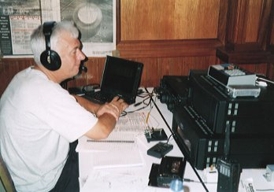
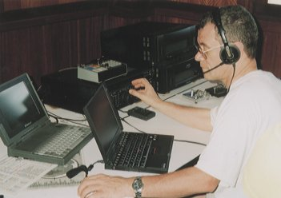
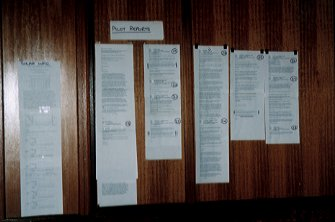
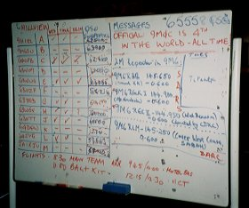
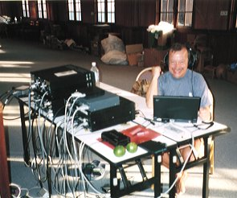
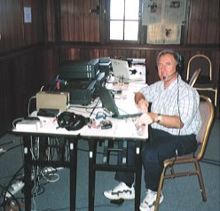
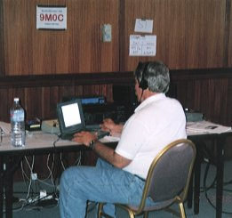
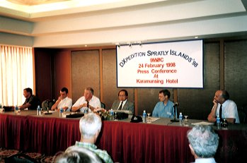
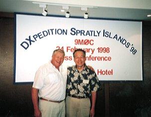
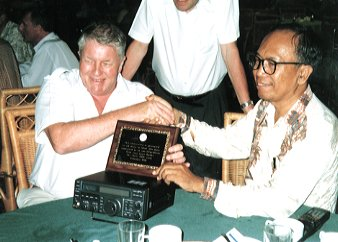

|
|
|
9M0Cの運用を終えて【9M0Cの運用から】最終的な9M0CのQSO数は65,524局だった。この数字はVK0IR、4J1FS、ZA1AのDX-Peditionの記録に次ぐ歴代4位にランクされるものとなった。 もちろん、運用時間(日数)や運用する時期が異なるので単純に数だけで優劣を比較することはできないが、数だけで評価するなら、 大成功と言えるものだった。運用は13人(2月15日にK5VTが帰国した)のオペレーターで、日程表に従い、夜も昼も休み無く続けられた。 最初はこのシフトが「仕事」に感じられ、休む余裕も無く追い立てられるようにQSOを続けた。正直なところ楽しむといった雰囲気ではなかった。 世界中から注目され、予想を超える連日のパイルアップに、みんな一生懸命だった。 今回のDX-Peditionの目的は、160m、80mなどのローバンドの局数を増やすことと、 ハイバンドでヨーロッパとアメリカ東海岸とのQSOに主力をおいての運用だった。 2月の中旬に日程が決められたのも、ローバンドのコンデションに合わせての決定だったという。もくろみ通り、9M0Cは注目され、 どのバンドでもヨーロッパから凄まじい勢いで呼ばれた。
運用中の各局
  160mにかかりきりだった、G3SED Mike／CDXCの会長兼今回のリーダー、G3OZF Don
当初の目標QSO数は、CDXCが参加したVK9の記録(45,000)を超えることだったが、2月20日の夜9時過ぎ、50,000の大台に達した。
この記念すべき数字を、2本のシャンパンを抜いてメンバー全員で祝った。
  パイロット局からのインターネット経由の情報／各局が最終QSO数を予想したが？
午前中、アンテナは全て北米方向にむけられた。同じビーム方向となるJA局にも好都合だったと思うが、
北米には短時間のオープンとなるハイバンドでは、幾度かJAには遠慮して頂いた。
JAは午後まで開いているので時間の余裕さえ有れば何時でもQSOは可能だと判断したからだ。
運用中の各局
   左から、RTTYを運用の9H1EL Jeff、29MHz FM運用のG3NOM(9M2OM) Ray、K5VT Vince
【50MHzのオープン】6mの389QSOは正直なところ予想もしていなかった数字だった。サンスポットが低いこの時期、2月上旬ではDXのパスが期待出来ないからだ。 それでも、運用期間が長いので一度ぐらいは近場のカントリーでもオープンしてくれるのではと、内心では淡い期待はしていた。 われわれが2月10日にスプラトリーに到着した時には、先発のメンバーが6mのアンテナを上げて50.102MHzでビーコンを流していてくれた。 6mは小型のアンテナで少人数でも上げる事が出来たため最初に設置したらしい。 しかし、12日まではHF帯の機器の準備やアンテナ建設作業にかかりっきりで、休憩時間以外は6mをワッチしている時間はなかった。幸いな事に49.750MHzのTVを聞いてみると弱い信号ながら受信出来、50MHz付近が「死んでいない」ことが判り期待が増した。 本格運用が始まって2日目の2月13日、突然の6mのオープンには飛び上がるほど驚き、あわてた。 運用スタート当初は、HF帯の運用にかかりきりで、6mのオープンする時間すら予測も出来なかったためだが、 最初のCWで呼んできたJAの信号は、他の受信機から流れてきたHF帯の音と間違えてしまうところだった。 JAからの信号はフラッター気味のフワフワした電波で、CWでは聞き取りにくいものだった。 2局以上重なるとさらに了解度は落ちてしまうので、最初は混乱してしまった。13日の初オープンは6QSO、15分程度で終わった。 この日はサイト2(S2)で21MHzの通常のシフトに入っていたが、普段はHF帯にQRVしない9M6SUと途中で交代、 6mのビーコンを発射しているサイト6(S6)に移動して間もなくの突然のオープンだった。 この日のオープンを境に、サイト6(S6)は「Kazu サイト」と呼ばれ、日中は6m専用に解放され、私が専属でワッチする事になった。 期待していなかった6mのオープンだったので「明日にでもヨーロッパとQSO出来る」かのように、みんなが喜んでくれた(ヤレヤレ)。 6mは13日以降14、16、19、20、21、22日と合計7日間もオープンした。 特に19日は約3時間、VR2(ホンコン)のオープンまで含めると6時間に渡るFBなコンデションに恵まれた。 この日はSSBによるQSOが70%を占め、JA7からJA6まで広範囲に開いてくれた。 しかし、相変わらず、信号はフワフワした聞き難いものだった。 21日は、たまたま席を空けている間に6mがオープン、他のメンバーが応答したが、この「フワフワ電波」のパイルには苦労したらしく、 10局ほどQSOして助けを求めて呼びに飛んできたほど。 JA側で録音した9M0Cのテープを帰国後に聞いたが、9M0側で聞いていたJAの方が良く聞こえていたように思われる。 最初のオープンはJA1、2エリアだったが、どんなルートでオープンしたのか判断できなかった。 太平洋方面へのオープンなら東寄りの1、2エリアが良いのは判るのだが、 西方向からのパスが西日本を飛び越えて1、2エリアの東日本にだけ届くとは予想もしていないものだった。 特にオープンの前半にはJA7(秋田)までパスが伸びていたのには驚いた。
 S6で活躍したFT-920とパソコン
6mが西日本に特に良くオープンしていたある日、指定した周波数でJR3のQRP局から呼ばれた。
この局のコールサインがなかなか取れず、何度も聞き返したが、コピー出来るのは「.../QRP」だけ。
コンデションが良かったのでQRPで呼んで見ようと思ったのかもしれないが、この同じ周波数で、
コンデションのあまり良くない東日本の局が必死に呼んでいる。
しかし、この「.../QRP」局はお構いなしに何度も呼んできて、JA7の局を潰してしまった。
【9M0Cの運用終了】VK0IRのQSO記録を更新するために、24日の早朝まで最後のトライをする160mのアンテナを除いて、2月23日に全てのアンテナは撤収された。 160mを運用するサイト3(S3)を残し、全てのRIGも梱包された。 水平線に真っ赤な太陽が沈むころ、アンテナ・ファームは跡形もなく消えた。2月24日、残務整理の3人のメンバーを残しわれわれは、08:30LMT発の一番機でコタキナバルに向けSpratly Isを後にした。 コタキナバルへの1時間のフライトの間、メンバーの各局はDX-Peditionを大成功で終えることが出来た安堵感と、 耳の奥に残るパイルアップの余韻を感じながら、満たされた気分で一杯だった。
【9M0Cの運用報告と記者会見】スプラトリーからコタキナバルに到着したメンバーは、休む間もなくホテルの催事会場で開かれた「運用報告・記者会見」に出席した。コタキナバルのマスコミ各社を集め「DX-Pedition Spratly Island 1998」の報告会が行われた。 メンバーの紹介から、今回の運用結果まで、集まった記者の質問にG3NUGらメンバーから成果が報告された。 この模様は翌日の各紙の紙面でも写真入りで紹介された。
  地元のマスコミを集めて記者会見／会見場でG3NUG(左)とJA1RJU
24日夜、SARSによる祝賀会が市内のレストランで開かれた。席上、CDXCからSARSへ、YaesuのFT-840が寄贈された。 明日はコタキナバル港に到着するスプラトリーからの荷物を確認して、今回の「DX-Pedition 1998」の公式行事は全て終了する。
 SARSにFT-840が贈られた G3NUG Neville(左)と9M6MA Hassan
◎ このDX-Peditionでは、"Log Search"を Homepage経由で行なっております。 9M0Cに関する情報は 9M0C SPRATLY 1998 Homepageでご覧下さい。
|
[Since 30.Jan.98]